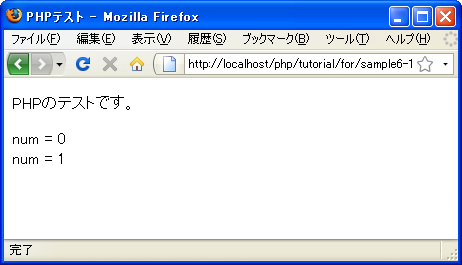

for文
繰り返し処理では条件式を評価して繰り返しを継続するかどうか判別します。条件式には色々な条件を記述することができますが、決められた回数だけ繰り返すといった処理は多く使われます。例えば次の例を見てください。
$count = 0;
while ($count < 10){
// 実行する処理
$count++;
}
この例では変数「count」を使って繰り返しを制御しています。その為に、変数の初期化、変数を使った条件式の記述、ブロック内で変数の増加、と変数「count」に関してあちこちに記述がされています。
このように変数の値を同じように変化させていき条件式で評価する場合にはfor文を使うとより簡潔に記述することができます。for文に書式は次の通りです。
for (初期化式; 条件式; 変化式){
実行する処理1;
実行する処理2;
}
for文では初期化式、条件式、変化式の3つを記述します。
初期化式はfor文の処理が開始される時に一度だけ実行され通常は条件式の中で使用される変数などの初期化を行う式を記述します。
条件式はwhile文などと同じく繰り返しを継続するかどうかの判定に用います。条件式の評価が真(TRUE)であればブロック内の処理を実行します。偽(FALSE)ならばfor文を終了します。
変化式は通常は条件式の中で使用される変数などを、繰り返しが1回行われる毎に変化させるための式を記述します。
while文で記述した先ほどの例をfor文で記述してみると次のようになります。
for ($count = 0; $count < 10; $count++){
// 実行する処理
}
このようにfor文では簡潔に記述すると同時に、繰り返しの中で使われる変数の制御がまとめて記述されるため分かりやすいプログラムを作成できます。
実行される処理が1つだけの場合はブロックを省略して次のように記述しても構いません。
for (初期化式; 条件式; 変化式) 実行する処理;
ではfor文がどのように実行されるのか確認していきます。次のような例で考えてみます。
for ($num = 0; $num < 2; $num++){
print "num=".$num;
}
この時、次のように実行されます。
1) 変数「num」に「0」を代入 2) 条件式を評価。変数「num」は2より小さいのでブロック内の処理を実行 3) 変数「num」の値を出力 4) ブロックの最後に達したので変数「num」を1だけ加算。変数「num」は「1」が代入される 5) for文の先頭へ戻り条件式を評価。変数「num」は2より小さいのでブロック内の処理を実行 6) 変数「num」の値を出力 7) ブロックの最後に達したので変数「num」を1だけ加算。変数「num」は「2」が代入される 8) for文の先頭へ戻り条件式を評価。変数「num」は2より小さいくない為、for文を終了
基本的な処理の流れはwhile文の場合と同じです。
なおwhile文と同じく「break」や「continue」を利用することが可能です。
サンプルプログラム
では簡単なプログラムで試して見ます。
<!DOCTYPE html PUBLIC "-//W3C//DTD XHTML 1.0 Transitional//EN"
"http://www.w3.org/TR/xhtml1/DTD/xhtml1-transitional.dtd">
<html xmlns="http://www.w3.org/1999/xhtml" xml:lang="ja" lang="ja">
<head>
<meta http-equiv="Content-Type" content="text/html;charset=UTF-8" />
<title>PHPテスト</title>
</head>
<body>
<p>PHPのテストです。</p>
<p>
<?php
for ($num = 0; $num < 2; $num++){
print 'num = '.$num.'<br />';
}
?>
</p>
</body>
</html>
上記のファイルをWWWサーバのドキュメントルート以下に設置しブラウザからアクセスすると次のように表示されます。

( Written by Tatsuo Ikura )

著者 / TATSUO IKURA
初心者～中級者の方を対象としたプログラミング方法や開発環境の構築の解説を行うサイトの運営を行っています。